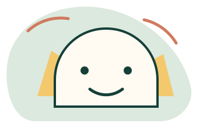

Curiozitate & descoperirePentru preșcolari
Emoțiile încep
cu o poveste.
Jocul, desenul și personajele îi ajută pe cei mici să recunoască emoții, să exprime o nevoie și să ceară ajutor.
- Recunoașterea emoțiilor
- Exprimare prin joc
- Primii pași în cooperare